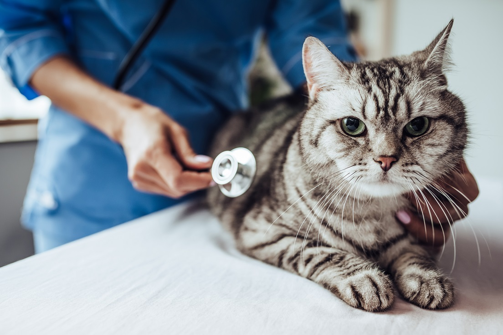
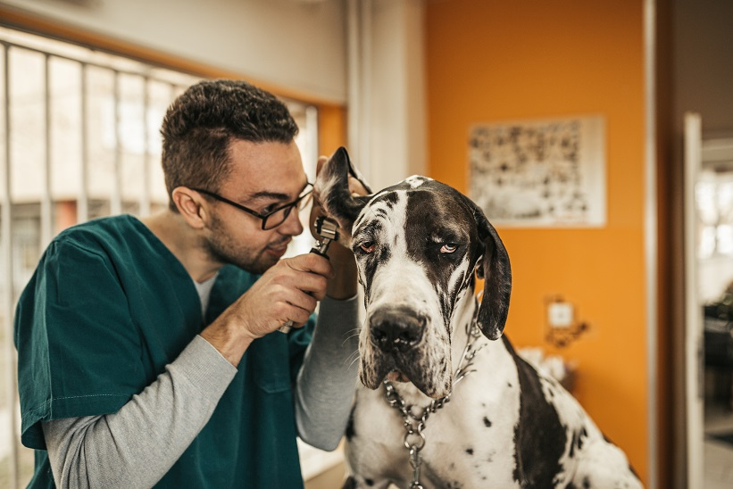

Physical Examination

A thorough examination of your pet's overall health, including checking for any signs of illness,
abnormalities, or discomfort.
Vaccinations
At Cairnsville Veterinary Care, we Ensure that your pet's vaccinations are up-to-date based on their
age, health status, and lifestyle.
Parasite Control

Assessment and preventive measures against common parasites like fleas, ticks, and worms.
Dental Check-Up
Evaluation of your pet's dental health, including checking for signs of dental disease and
providing advice on dental care.